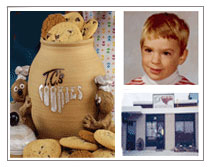

|
|
|
about usIt all began in 1978, when Pat and Pete Coe's son Mark, who was 4 years old, was hospitalized. After 2 weeks, suspecting food related allergies, he was sent home on a restricted diet. As Pat slowly added items back into his diet, she discovered that it was not the food itself (eg. wheat, milk, eggs etc.), but additives, preservatives and artificial ingredients present in the food that were causing the problems. If Mark consumed any foods containing these items, he would become extremely hyperactive, misbehaved, and unable to sleep for days. In 1984, Pat and her husband Peter opened The Cookie Jar, now the Terra Cotta Cookie Co. Ltd. or T.C.’s Cookies. They made cookies from scratch with NO additives, preservatives, artificial flavours or colours. They also reduced the sugar content significantly. Soft unbleached flour, 100% soya oil margarine, fresh whole eggs & lots of pure semi-sweet chocolate chips are still being used in their cookies. New cookies were added, and in 1998, aware of allergy problems, Terra Cotta Cookies became Peanut Free. Since moving to our new location in June 2002, in Georgetown, Ontario, our factory has been totally Peanut and Nut Free. Since June 2007, Pat has developed a selection of Gluten Free baked goods for Celiacs and those who have a Wheat Allergy. Products are available at our Factory Outlet, 20 Armstrong Ave., Unit 1, Georgetown, ON Monday to Friday, 9:00am to 5:00 pm from September to June.
|
contact infoTerra Cotta Cookie Co. Phone:
Products are available at our Factory Outlet, 20 Armstrong Ave., Unit 1, Georgetown, ON Monday to Friday, 9:00am to 5:00 pm from September to June. |


© Copyright 2009 Terra Cotta Cookie Company. All Rights Reserved. Design by Maxmedia Design Group Inc. |